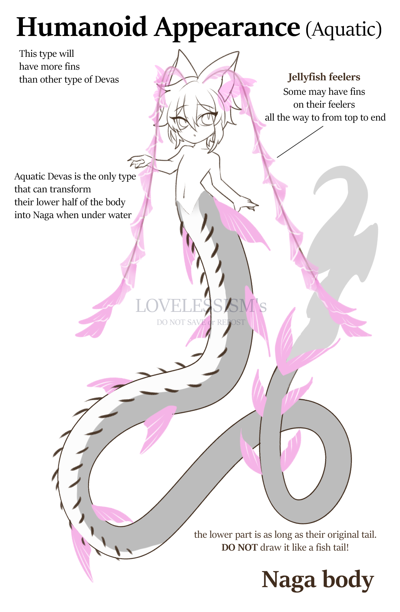
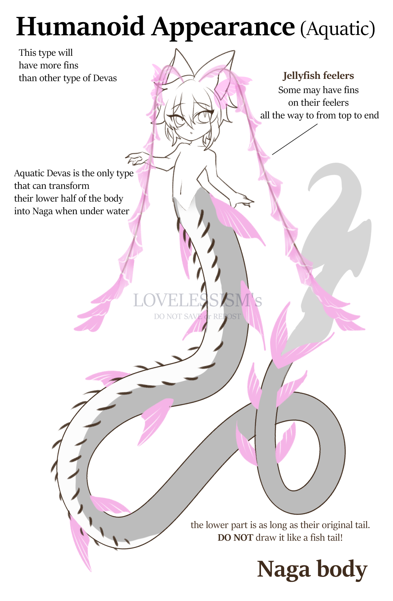

FAQ
Q : Do we need to buy an add-on if we want to draw Devas in other forms? ( Ex : Humanoid, Dragontaur, mini and true form )
A : No you don't! If you have a Devas, you can draw them in any of their form, they're capable of transforming.
Q : What can we do with a "Normal Devas" slot?
A : You can choose to create any of the Land / Sky / Aquatic / Underground Devas
but you cannot mixed the traits from one type to another (ex: you cannot have trait from Sky and Aqua in one design )
Q : Can we mix the traits of different type of devas?
A : Usually no. but if you buy an add-on, you can create devas that have 2 mixed types. (Ex : Aquatic devas + Floral body)
Mixed trait devas can be born in a condition that the fragments of it's mother got combined together when they were scattered.
Even when they're mixed, you still need to choose the main type ( Ex : main is Sky, you can use any traits from Sky type but you can add only 1 more trait from another type)
Q : For the mixed-traits Devas that only have 1 extra trait from another type, can we pay to add more traits to use?
A : Unfortunately, no. To prevent Devas having too many traits from every type, I only allow you to choose 1 extra trait to add into your Devas so, choose wisely!
Mixed-traits Devas will still able to use only one main element. They can have a sub element but that element can rarely be used. Ex : if you have fire as a sub element, your Devas will only be able to use it as a lighter.
Q : For the mixed-traits Devas, can we use the trait from "God Eater"?
A: Also, NO. Mixed-devas is still count as normal devas, the traits from God eater is a trait that cause from mutation from the nomal devas so it can be only used in God eater.
NOTE : If you have god eater myo, you can choose any traits/suptype you want.
Species:
All Devas looks like angels that had been devoured by demons. human-like upper body The lower body is a dragon, with a long tail covered in scales.
But there are some different details in their traits due to the scattering of the mother's fragments in various places.
The general appearance of Devas is half-dragon-human. which is what remains of the mother's body.
The hands and feet have sharp claws. There is an insect feelers on the head.
Their tail is longer than it's body and under their tail, there's a small thorns that looks like a centipede legs.
Most Devas' ears are shaped like deer or wolf's ears, but have fin-like objects attached to the inside of the ears.
Devas butterfly-shaped fins are found on the ears, the last pair of legs, at the end of the feelers, at the base of the tail, along the trunk and at the tip of the tail.
Devas can change their appearance into 4 types:
Subtypes
Child of Soul
Child of soul is a sky type They came from the fragments of their creater's soul that shatters when they fall from heaven. This type usually a kind-hearted one. They have power heal or can freeze time. They can use wind or light element have have the ability to fly better than other type. Traits : -Soul particles floating around the body(can be any shape) -Winged fins Bigger fins on their back that resembles insect wings. -Fragile heart A wisp on their chest that represent their heart. if a sky devas have this, it means that they have the ability to heal Habitat : floating garden, sky, top of the moutain. Element : Wind, Light
Child of Tears
 

Child of tears is an aquatic type. they came from their creater's tear that shed when the gods abandon her. This type can breathe under water and can use water/ice element Traits : Jellyfish feelers ( optional, some aquatic type can have normal feelers as well but other type of devas cannot have Jellyfish feelers) This type is the only type that can transform their lower half of the body into naga-like when under water. Habitat : Sea, River Element : Water, Ice
Child of Flesh & Blood
Child of flesh and blood is a land type. They come from their mother's flesh and blood that were thorn into pieces. They have the ability to use earth/rock/plants element. they can regenerate their limbs if it got cut off and have more physical strength than other types. Traits : Horn, Flora body, rock armor Habitat : on land Element : Earth, Plants, Rock
Child of Wrath


Child of wrath is an underground type. They're born from the wrath of their mother when the gods blame for her sin. They have fire and darkness element and part of their body can glow in the dark Traits : -Cracks all over the body, -Leaking (liquid leak from the cracks.) -Single colored-eye Eyes will be single color (white, black, other colors.) when they have dark colored eye, some may have sparkles that resembles the night sky. -Flaming heart looks similar to the Soul child's fragile heart but more aggressive. with this one it comes from the Wrath energy leaking and bursting into flames. it will not burn it's owner but it will destroy everything else.
God Eater
NOTE : god eaters can have/be of any traits/subtype. God eater is the children that manage to eat the gods and stole their power. this type is the most powerful and they were called Devasin. This type is a special type, cannot make on free myo event. Their body is a lot bigger than normal devas They can control more than one element. Some may lose their conscious and go insane because their power is too powerful. Traits Corrupted wings : Larger winged fins that sometimes breaks apart from the body. some may have multiple wings. sometime may have prism particles inside the wings. Extra long tail : Two time or more longer and larger than normal devas Elemental body : Elemental fluid that cover some parts of the body and turn that whole part into element. ex: the element can be glass, metal, fire, water, etc. Corrupted Armor : Rock armor that looks like horns or spike that grows out of the body. Bone feelers : bone that grows on the feelers. it may be sharp like a blade. All-seeing eye : multiple eyes on the body, they will have the ability to see future and past. Bloom : Flower and plants grow all over their body. Sub Type (these type is just what it is called when have some certain traits) Eden : Child of Flesh that covered in flower and plants, looks like a walking garden Typhon : Child of wrath that have two tails coiled together. Seraph : Child of soul that have multiple extra large winged fins Leviathan : Child of tears that develop their body into giant sea monster. Kraken : Child of tears that develop tentacles from their tail.